Runs the match on your wrist
Clocks for each period, stoppage and breaks, with vibration alerts. On Garmin watches, with or without a phone, and in early testing on Wear OS and Apple Watch.
For soccer and football referees
Run the match on your watch. Your schedule, fees, reports and tracks follow you to your phone and the web, even without signal at the ground.
Or try a match on the watch, here in your browser.
While LawFive is in testing, we approve each new account by hand. The Android and Garmin apps are on their way to Google Play and Garmin's Connect IQ Store, and apps for iPhone, Wear OS and Apple Watch are in early testing.
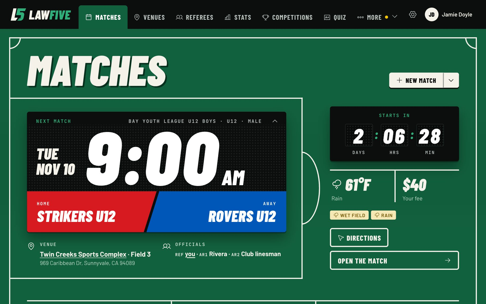
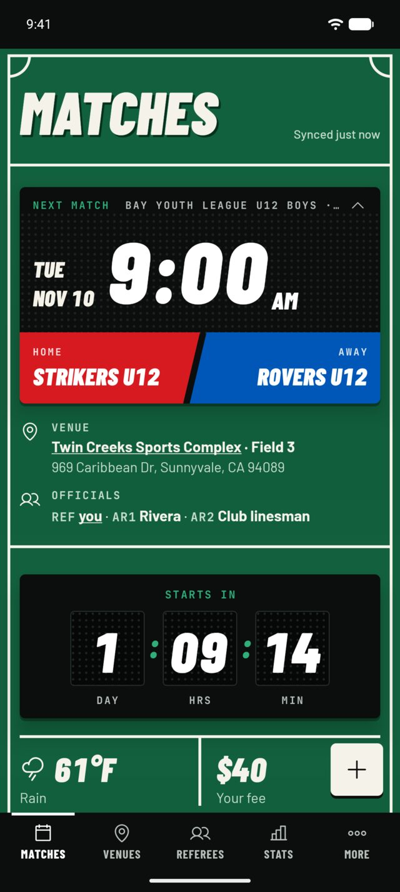

What it does
Everything a referee keeps track of, in one place.
Clocks for each period, stoppage and breaks, with vibration alerts. On Garmin watches, with or without a phone, and in early testing on Wear OS and Apple Watch.
Record each one with a few taps and the time it happened, then print the match report or copy it as text.
The phone keeps your matches without signal. What your watch records waits on it, or with a Garmin on your Android phone, until there's a connection.
Your GPS track and heart rate from each match, with distance, speed and a heatmap of the pitch.
The forecast for each kickoff, with a warning for a wet field, storms, snow or heat. On Android, a notification when a new risk appears.
See what you're owed and mark fees paid, from the watch too. Get reminders, and your matches in your calendar.
Each field on a map, parking included, with directions to the right one.
Referees and assistants, how many matches you've done together, and how to reach them.
Games by role, distance, competitions and venues, across as many seasons as you like, with imports from a spreadsheet.
A closer look
Before the match, face the goal the kickoff team attacks and save it. At each later kickoff, an arrow on your watch turns as you turn, pointing the way that team attacks. No more wondering which way the second half goes.
Garmin, Wear OS and Apple Watch, on watches with a compass
Stand on a corner, press Start and hold still for a few seconds while the watch takes its GPS position. Do the same at the others. Your movement then lands on the real pitch, in the heatmap and the replay.
Garmin, Wear OS and Apple Watch

Build what your watch shows while a period runs, a step at a time: one clock or two, each counting up through the match, up from zero each half, or down to zero. Add a ring or the time of day, and team names or just the score. Pictures of the screen follow along, at any moment of a match you pick, or played through from kickoff to full time.
Then try a match with it, on the watch in your browser.
Set up on the website or either phone, for Garmin, Wear OS and Apple Watch
Watch your match back. Your run plays out on the pitch with the clock, score, heart rate and speed at every moment, and pauses on each goal and card. Drag to any point, or jump straight to an event.
Website, Android and iPhone, for matches with a track
LawFive · now
Weather risk: Strikers U12 v Rovers U12
Wet field possible, rain possible · Tue 9:00 AM
Directions
Every kickoff gets its forecast, with a warning for a wet field, storms, snow or heat, so you know before you leave. Turn on notifications and your phone tells you when a new risk appears in the three days before a match. Tap to open the match, or go straight to directions.
Forecasts and warnings on the website and phones, and the forecast on the watches. Notifications on Android, with iPhone to follow
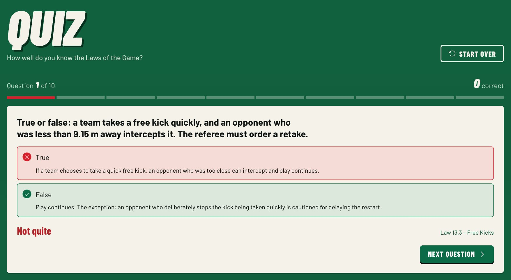
Test yourself between matches: 5 to 20 questions on the Laws of the Game, easy, medium or hard. Each answer says why, with the Law it comes from, and the end shows which Laws to brush up on.
Website, Android and iPhone, with no signal needed on the phones
See it
Big clocks and few taps, made for checking at a glance mid-match. Each runs the whole match by itself, with clocks, stoppage, goals and cards, vibration alerts, extra time and penalties, and syncs when it can.
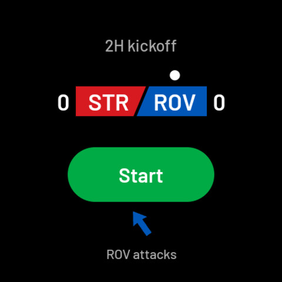
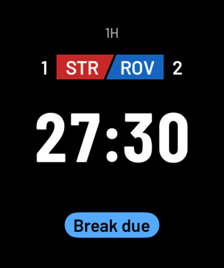
Your matches, venues and crew at the ground, with or without signal, plus match reminders and your stats. On Android, the phone also carries your Garmin watch's sync when there's no signal, and tells you about new weather risks and changes from the app that sends your assignments.
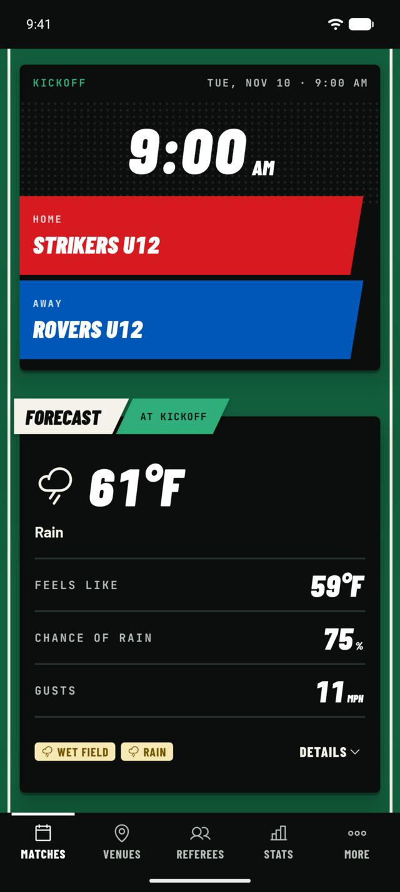
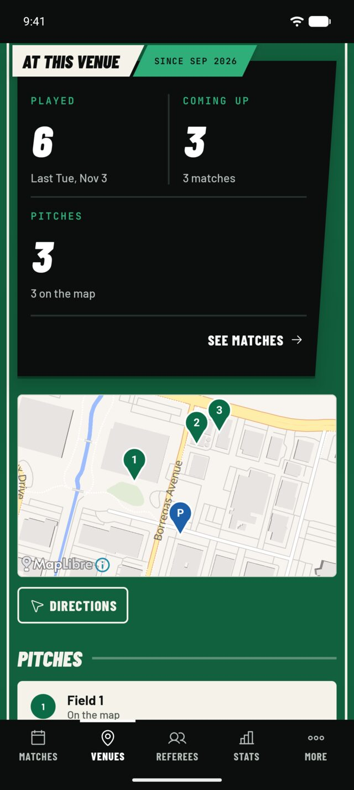
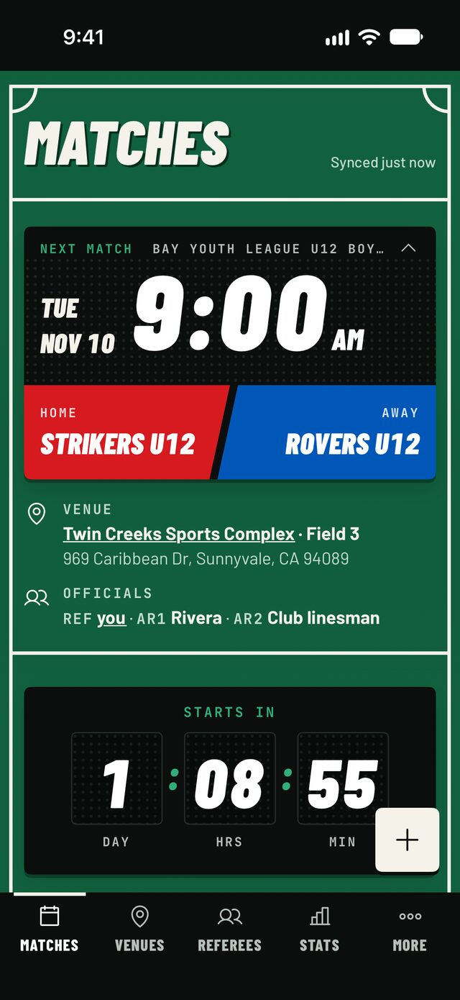
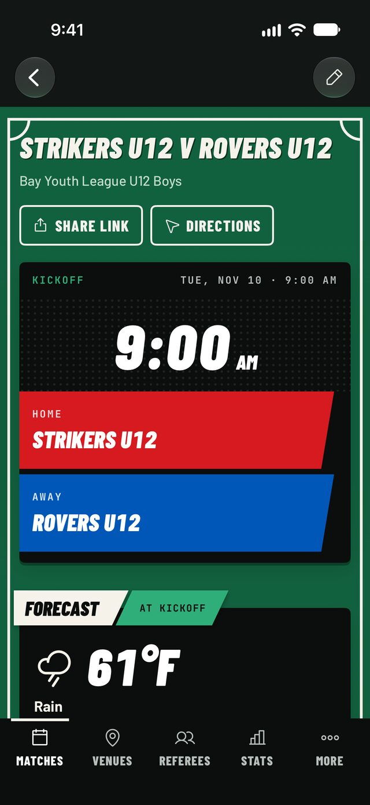
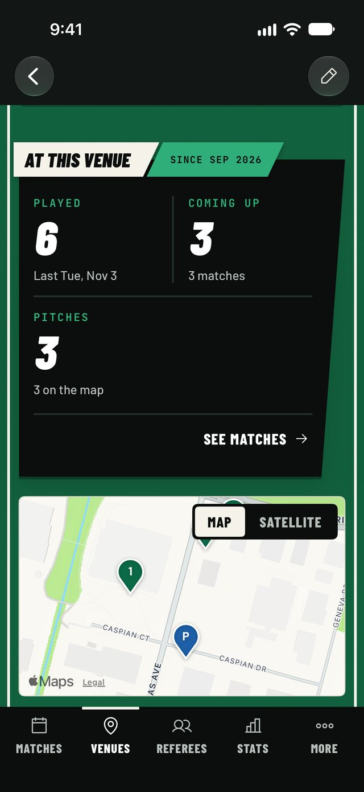
The full picture on a bigger screen: your schedule, every match's report, and your stats.
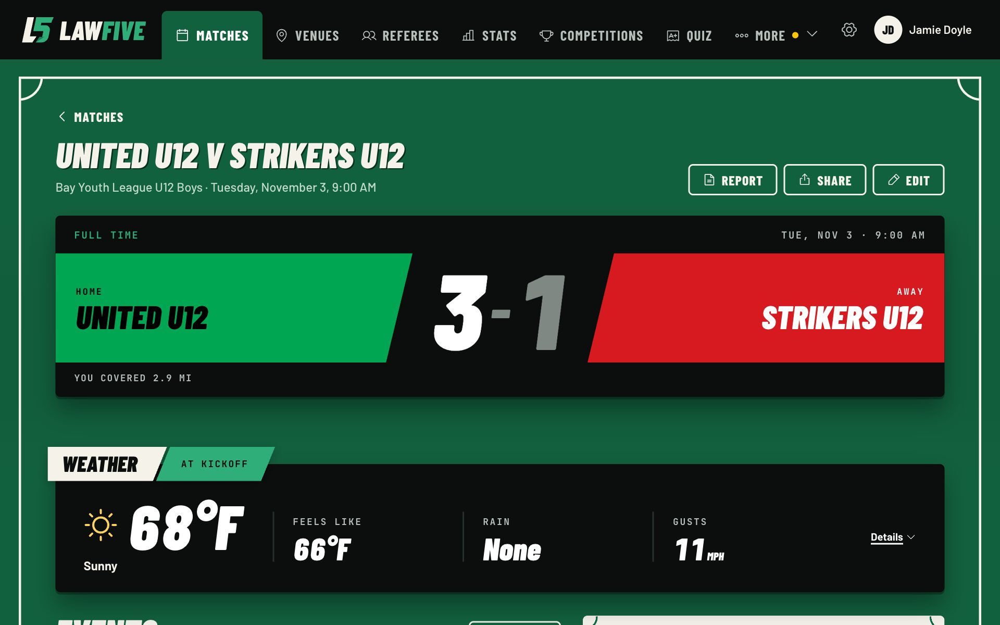
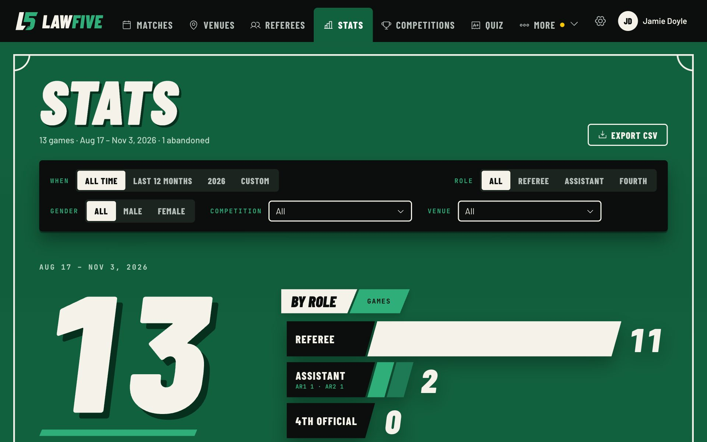
Find out more
For self-hosters and developers
LawFive's server runs in Docker on a machine of your own, and the same apps connect to it. There's an API with keys and webhooks for your own tools. The docs cover all of it, as a preview for now, ahead of the code going public.
Make an account, and we'll email you once it's approved. Already have one? Sign in on the web.